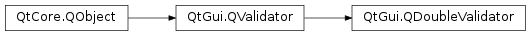

QDoubleValidator¶
Synopsis¶
Functions¶
- def
bottom() - def
decimals() - def
notation() - def
setBottom(arg__1) - def
setDecimals(arg__1) - def
setNotation(arg__1) - def
setTop(arg__1) - def
top()
Signals¶
- def
bottomChanged(bottom) - def
decimalsChanged(decimals) - def
notationChanged(notation) - def
topChanged(top)
Detailed Description¶
The
PySide2.QtGui.QDoubleValidatorclass provides range checking of floating-point numbers.
PySide2.QtGui.QDoubleValidatorprovides an upper bound, a lower bound, and a limit on the number of digits after the decimal point. It does not provide aPySide2.QtGui.QValidator.fixup()function.You can set the acceptable range in one call with
PySide2.QtGui.QDoubleValidator.setRange(), or withPySide2.QtGui.QDoubleValidator.setBottom()andPySide2.QtGui.QDoubleValidator.setTop(). Set the number of decimal places withPySide2.QtGui.QDoubleValidator.setDecimals(). ThePySide2.QtGui.QDoubleValidator.validate()function returns the validation state.
PySide2.QtGui.QDoubleValidatoruses itsPySide2.QtGui.QValidator.locale()to interpret the number. For example, in the German locale, “1,234” will be accepted as the fractional number 1.234. In Arabic locales,PySide2.QtGui.QDoubleValidatorwill accept Arabic digits.Note
The
QLocale.NumberOptionsset on thePySide2.QtGui.QValidator.locale()also affect the way the number is interpreted. For example, sinceQLocale.RejectGroupSeparatoris not set by default, the validator will accept group separators. It is thus recommended to useQLocale.toDouble()to obtain the numeric value.See also
PySide2.QtGui.QIntValidatorPySide2.QtGui.QRegExpValidatorQLocale.toDouble()Line Edits Example
-
class
PySide2.QtGui.QDoubleValidator([parent=nullptr])¶ -
class
PySide2.QtGui.QDoubleValidator(bottom, top, decimals[, parent=nullptr]) Parameters: - bottom –
PySide2.QtCore.double - decimals –
PySide2.QtCore.int - top –
PySide2.QtCore.double - parent –
PySide2.QtCore.QObject
Constructs a validator object with a
parentobject that accepts any double.Constructs a validator object with a
parentobject. This validator will accept doubles frombottomtotopinclusive, with up todecimalsdigits after the decimal point.- bottom –
-
PySide2.QtGui.QDoubleValidator.Notation¶ This enum defines the allowed notations for entering a double.
Constant Description QDoubleValidator.StandardNotation The string is written as a standard number (i.e. 0.015). QDoubleValidator.ScientificNotation The string is written in scientific form. It may have an exponent part(i.e. 1.5E-2).
-
PySide2.QtGui.QDoubleValidator.bottom()¶ Return type: PySide2.QtCore.double
-
PySide2.QtGui.QDoubleValidator.bottomChanged(bottom)¶ Parameters: bottom – PySide2.QtCore.double
-
PySide2.QtGui.QDoubleValidator.decimals()¶ Return type: PySide2.QtCore.int
-
PySide2.QtGui.QDoubleValidator.decimalsChanged(decimals)¶ Parameters: decimals – PySide2.QtCore.int
-
PySide2.QtGui.QDoubleValidator.notation()¶ Return type: PySide2.QtGui.QDoubleValidator.Notation
-
PySide2.QtGui.QDoubleValidator.notationChanged(notation)¶ Parameters: notation – PySide2.QtGui.QDoubleValidator.Notation
-
PySide2.QtGui.QDoubleValidator.setBottom(arg__1)¶ Parameters: arg__1 – PySide2.QtCore.double
-
PySide2.QtGui.QDoubleValidator.setDecimals(arg__1)¶ Parameters: arg__1 – PySide2.QtCore.int
-
PySide2.QtGui.QDoubleValidator.setNotation(arg__1)¶ Parameters: arg__1 – PySide2.QtGui.QDoubleValidator.Notation
-
PySide2.QtGui.QDoubleValidator.setRange(bottom, top[, decimals=0])¶ Parameters: - bottom –
PySide2.QtCore.double - top –
PySide2.QtCore.double - decimals –
PySide2.QtCore.int
Sets the validator to accept doubles from
minimumtomaximuminclusive, with at mostdecimalsdigits after the decimal point.- bottom –
-
PySide2.QtGui.QDoubleValidator.setTop(arg__1)¶ Parameters: arg__1 – PySide2.QtCore.doubleSee also
-
PySide2.QtGui.QDoubleValidator.top()¶ Return type: PySide2.QtCore.double
-
PySide2.QtGui.QDoubleValidator.topChanged(top)¶ Parameters: top – PySide2.QtCore.double
© 2018 The Qt Company Ltd. Documentation contributions included herein are the copyrights of their respective owners. The documentation provided herein is licensed under the terms of the GNU Free Documentation License version 1.3 as published by the Free Software Foundation. Qt and respective logos are trademarks of The Qt Company Ltd. in Finland and/or other countries worldwide. All other trademarks are property of their respective owners.